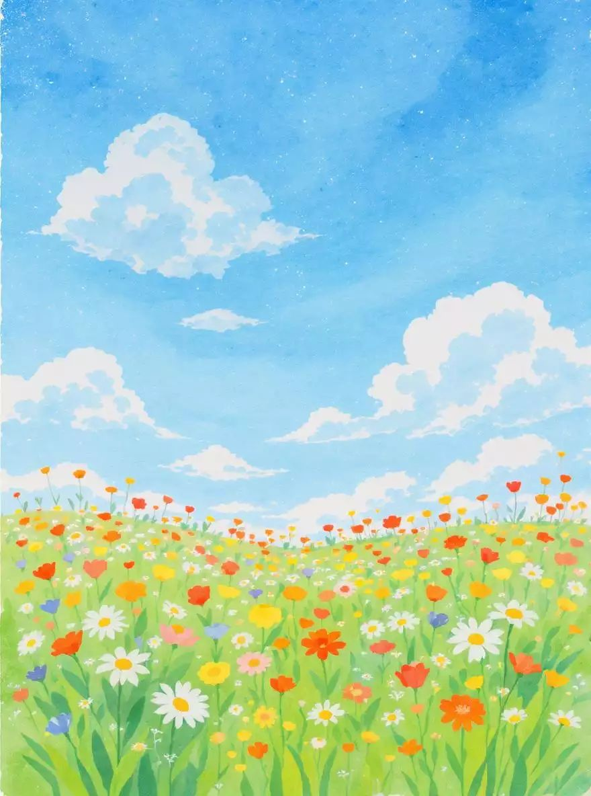
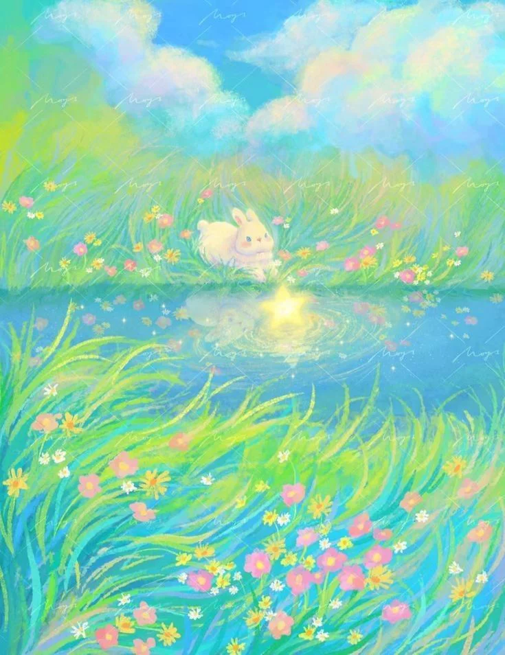
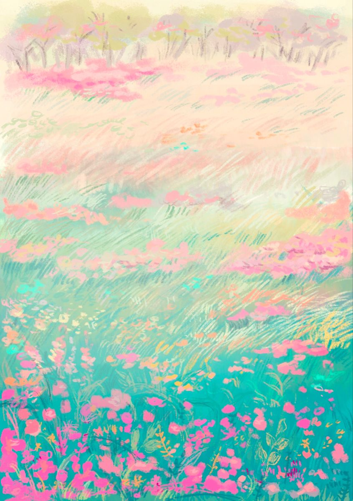
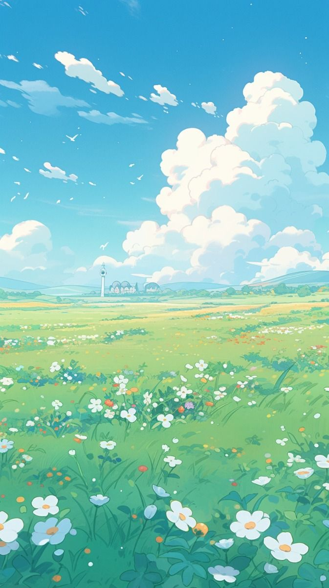
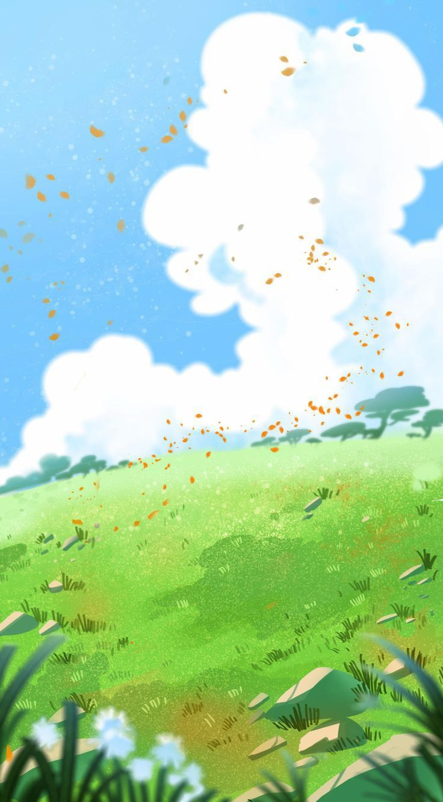
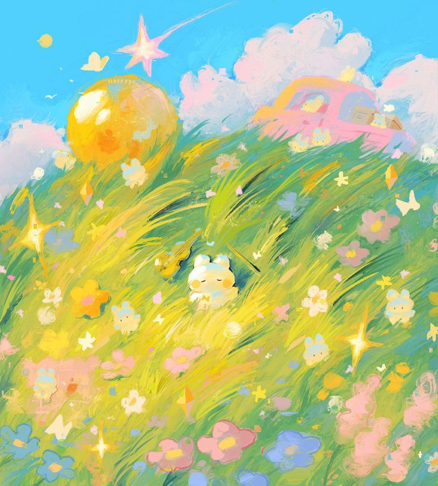
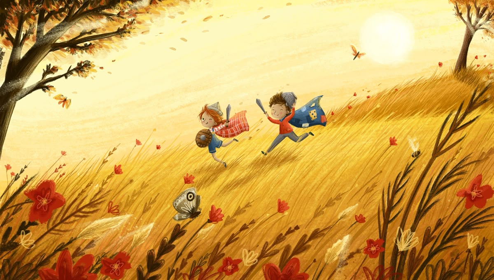
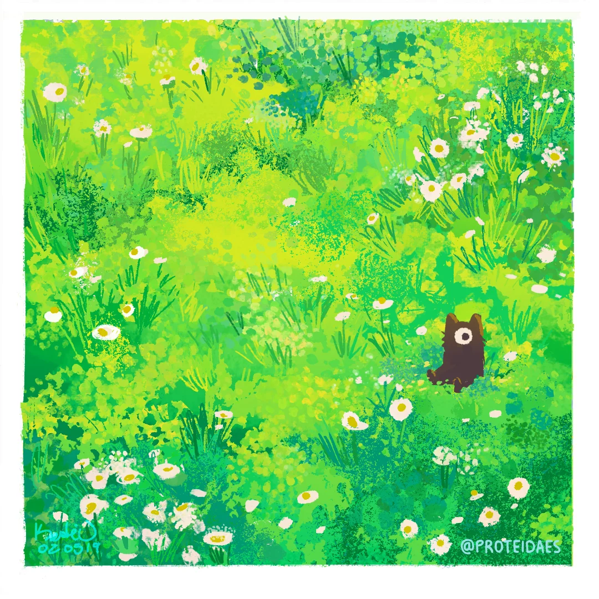

Bài viết ấn tượng
Bài viết đạt giải nhất HSG 2015
Nghị luận ý kiến: "Hình tượng nhân vật được sinh ra từ tâm trí của nhà văn nhưng chỉ thực sự sống bằng...

Bài viết đạt điểm 10 THPTQG
Bàn về truyện cổ tích và ca dao, có ý kiến cho rằng: "Các nhà văn học được văn trong truyện cổ tích và học...

Bài viết đạt điểm 10 THPTQG
Nhà văn Bùi Hiển đã phát biểu khẳng định ý nghĩa đặc biệt của tiếng nói tri ân trong văn chương...






